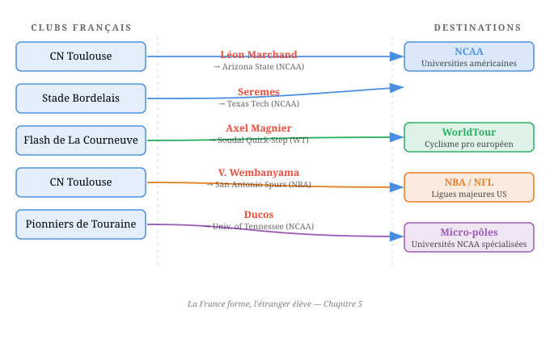

La France forme, l'étranger élève
Marchand nage en Arizona. Dix-neuf Français jouent en NBA. Vingt-quatre coureurs français pédalent pour des équipes étrangères du WorldTour. Trois cents athlètes français s’entraînent dans des universités américaines. Des joueurs de football américain issus de clubs de banlieue parisienne intègrent des programmes du Tennessee et de Virginie. Le schéma est partout. La France forme les athlètes. L’étranger les élève.
Et ce n’est pas seulement les athlètes. Les entraîneurs français exportent leur savoir-faire vers des nations qui savent l’utiliser mieux que la France elle-même. Le Péchoux, maître d’armes rejeté par la FFE, fait gagner le Japon en escrime. Portal, coureur modeste, construit la domination Sky/INEOS en cyclisme. Rivas, Espagnol recruté par la France en badminton, produit des résultats en deux ans que la fédération n’avait pas produits en vingt. L’exode des athlètes et l’exode des coaches sont les deux faces du même diagnostic : le système français produit la matière première mais pas le produit fini.
Le pattern transversal
Natation : le système américain comme accélérateur
Léon Marchand est le cas le plus documenté et le plus spectaculaire. Formé au Cercle des Nageurs de Toulouse sous la direction de Nicolas Castel, il rejoint en 2021 l’Université d’Arizona State et l’entraîneur Bob Bowman, celui qui avait construit Michael Phelps. Le résultat est connu : quatre titres olympiques individuels à Paris en 2024, des records du monde, une domination totale sur le 200 et le 400 mètres quatre nages. Marchand avait vingt ans quand il a quitté la France. Il était déjà un nageur de niveau international. Mais c’est le système universitaire américain qui l’a transformé en champion olympique : les installations d’Arizona State, le staff technique de Bowman, la culture de l’optimisation permanente, la compétition quotidienne contre d’autres nageurs de classe mondiale au sein du même groupe d’entraînement. Le système français avait formé le nageur. Le système américain a produit le champion.
Le cas Marchand n’est pas isolé. Il s’inscrit dans une séquence que l’on peut désormais identifier comme structurelle. Mary-Ambre Moluh, dix-huit ans, médaillée de bronze en relais à Paris 2024, s’entraîne désormais à l’Université du Texas sous la direction du même Bob Bowman, qui a quitté Arizona State pour Austin. La trajectoire est identique : formation française de haut niveau, puis départ vers une infrastructure américaine jugée supérieure. Avant Marchand, le schéma existait déjà sous une forme différente mais fonctionnellement équivalente. Laure Manaudou et Philippe Lucas, Camille Muffat et Fabrice Pellerin, Yannick Agnel et le même Pellerin : la natation française a toujours fonctionné par micro-pôles, des environnements d’entraînement construits autour de la relation entre un entraîneur d’exception et un ou deux nageurs d’exception. Ces micro-pôles n’étaient pas le produit du système fédéral. Ils existaient malgré lui, dans les interstices, à Melun, à Canet-en-Roussillon, à Nice. Et quand l’athlète quittait le micro-pôle – parce que la relation avec l’entraîneur se dégradait, parce que le nageur vieillissait, parce que le cadre se délitait – la performance s’effondrait. Il n’existait aucune structure capable de prendre le relais. La différence entre les micro-pôles français et le système universitaire américain est précisément celle-ci : le micro-pôle dépend d’un individu, le système américain est une institution. Quand Bowman change d’université, il emmène ses méthodes, ses assistants, sa culture. Le système survit à la mobilité de ses acteurs. Le micro-pôle français, lui, meurt avec le départ de son fondateur.
Cyclisme sur route : l’effondrement qui libère
Le cyclisme français sur route présente un paradoxe productif. En 2026, vingt-quatre Français évoluent au sein d’équipes étrangères du WorldTour – un record historique. Paul Magnier, dix-neuf ans, chez Soudal Quick-Step, a accumulé dix-neuf victoires en 2025, une saison qui l’installe parmi les meilleurs coureurs du monde de sa génération. Lenny Martinez, chez Red Bull-BORA-hansgrohe, s’affirme comme un grimpeur de classe mondiale. Kévin Vauquelin, vainqueur d’étape sur le Tour de France 2024, évolue chez INEOS Grenadiers. Christophe Laporte, champion d’Europe 2022, est chez Visma-Lease a Bike. Benoît Cosnefroy chez Lidl-Trek. Bruno Armirail chez INEOS Grenadiers. La liste s’allonge chaque année.
Ces coureurs partagent un parcours commun : formation dans les clubs amateurs français, détection par les équipes de développement, puis élévation dans des structures étrangères qui disposent de budgets, de staffs et de moyens technologiques sans commune mesure avec ce que les équipes françaises peuvent offrir. Les équipes WorldTour étrangères investissent des dizaines de millions d’euros par an dans l’optimisation de la performance : nutritionnistes, biomécaniciens, analystes de données, stages en altitude, reconnaissance de parcours. Les équipes françaises du WorldTour – Groupama-FDJ, Decathlon AG2R – fonctionnent avec des budgets inférieurs et des staffs plus réduits.
Le paradoxe réside dans l’effondrement du circuit amateur français. Le nombre de clubs en Nationale 1, la première division amateur, est passé de vingt-huit à dix-neuf en deux ans. La base se contracte. Mais cette contraction a un effet inattendu : elle pousse les meilleurs jeunes à quitter plus tôt le circuit français pour rejoindre des structures étrangères de développement. Le plafond domestique s’abaisse, ce qui force les talents à viser plus haut, plus vite. C’est un effet contrintuitif : l’affaiblissement du circuit national accélère l’exportation des meilleurs éléments vers des environnements plus compétitifs. Le système français ne s’améliore pas. Mais ses meilleurs produits, eux, trouvent ailleurs les conditions de leur élévation.
Athlétisme : la filière NCAA comme substitut structurel
Depuis 2017, l’agence Elite Athletes a placé plus de trois cents athlètes français dans des universités américaines de Division I de la NCAA. Le chiffre est considérable. Il signifie que chaque année, plusieurs dizaines de jeunes athlètes français quittent le système fédéral pour rejoindre des campus universitaires américains où les conditions d’entraînement, les installations et l’encadrement technique sont, de l’aveu des athlètes eux-mêmes, d’un niveau que leurs clubs français ne peuvent pas offrir.
Les résultats parlent d’eux-mêmes. Emmanuel Seremes, formé dans un club français, est devenu double champion NCAA du triple saut à Texas Tech. Clémence Wamokpego, championne NCAA du triple saut à Kansas. Antoine Ducos, passé par l’Université du Tennessee, a atteint la quatrième place de la finale olympique du 400 mètres haies à Paris 2024. Thomas Vessat, à Purdue, a battu le record de France du 400 mètres en salle. Ces athlètes décrivent des installations “dignes de l’INSEP” dans des universités de taille moyenne du Midwest ou du Sud des États-Unis – des pistes indoor chauffées, des salles de musculation dédiées à l’athlétisme, des staffs médicaux permanents, des nutritionnistes attitrés. Des conditions qui se situent, selon leurs mots, “à des années-lumière” de ce que proposent leurs clubs d’origine en France, où l’entraînement se fait souvent sur des installations municipales partagées avec le football, le rugby et les scolaires.
La filière NCAA ne remplace pas le système fédéral français. Elle le complète là où il s’arrête. Le système français forme des athlètes techniquement compétents, capables de passer les minima de qualification universitaire américains. Le système américain prend le relais : il fournit l’environnement quotidien – installations, encadrement, compétition de haut niveau hebdomadaire – qui permet de franchir le palier entre le niveau national et le niveau mondial. La question que pose cette filière est la même que pour la natation et le cyclisme : pourquoi le système français ne parvient-il pas à offrir, sur son territoire, les conditions que trois cents de ses athlètes vont chercher à dix mille kilomètres ?
Basketball : le pipeline industriel
L’histoire du basketball français en NBA est une courbe exponentielle. Un joueur en 1997. Trois en 2001, dont Tony Parker. Dix en 2010. Quatorze en 2024. Dix-neuf en 2025, parmi lesquels Victor Wembanyama, premier choix de la Draft 2023, Zaccharie Risacher, premier choix de la Draft 2024, et Alex Sarr, deuxième choix de la même Draft. La France est, derrière les États-Unis, la première nation exportatrice de joueurs NBA au monde.
Ce résultat repose sur un pipeline de formation d’une densité sans équivalent en Europe. Trente et un pôles espoirs régionaux alimentent les centres de formation des clubs professionnels et l’INSEP. La détection est précoce, systématique, industrielle. Un adolescent de quatorze ans identifié dans un pôle espoir en Normandie ou en Occitanie peut, en l’espace de quatre ans, se retrouver à l’INSEP, puis dans un centre de formation professionnel, puis en NBA. La chaîne est continue. Elle ne laisse pas de place au hasard.
Mais le constat demeure : c’est la NBA qui élève. Wembanyama, formé à Nanterre puis au Mans et à Boulogne-Levallois, était déjà un joueur extraordinaire en France. C’est à San Antonio, avec les moyens des Spurs, leur staff technique, leur programme de développement individualisé, leur culture de l’excellence, qu’il est devenu le joueur le plus dominant de la ligue dès sa deuxième saison. Risacher et Sarr suivent la même trajectoire. En parallèle, soixante-treize Français évoluaient en NCAA Division I lors de la saison 2024-2025, alimentant un second pipeline, universitaire, qui fonctionne comme un filet de sécurité pour les joueurs qui ne sont pas draftés directement.
Le basketball illustre une forme achevée du modèle “formation française, élévation étrangère” : le pipeline est conscient, structuré, assumé. La fédération française de basketball ne considère pas le départ vers la NBA comme une fuite. Elle le considère comme l’aboutissement logique de son système de formation. Ce qui n’empêche pas la question de se poser : si la France forme les meilleurs joueurs du monde après les Américains, pourquoi n’est-elle jamais championne olympique ?
La gravité économique
Il faut nommer ce que les analyses sportives esquivent généralement : l’argent. Le pattern “la France forme, l’étranger élève” n’est pas seulement un problème d’infrastructure. C’est un problème économique. Les écosystèmes étrangers qui élèvent les athlètes français sont, avant tout, des écosystèmes plus riches.
Le prochain contrat de Victor Wembanyama aux San Antonio Spurs est estimé entre 252 et 326 millions de dollars sur cinq ans. Jayson Tatum détient le plus gros contrat de l’histoire de la NBA : 314 millions de dollars. Shai Gilgeous-Alexander touche 71,3 millions de dollars par an. En NFL, les meilleurs quarterbacks dépassent 60 millions par an. En MLB, Juan Soto a signé un contrat de 765 millions de dollars sur quinze ans. Ces chiffres ne sont pas anecdotiques. Ils créent une force de gravité économique qui attire les profils athlétiques du monde entier vers les sports et les ligues qui paient le mieux.
En France, le contraste est vertigineux. Près de la moitié des sportifs de haut niveau gagnent moins de 500 euros par mois. Un athlète de demi-fond de niveau international peut espérer 20 000 à 50 000 euros annuels. Le prize money total de la Diamond League en 2025 – le circuit le plus prestigieux de l’athlétisme mondial – s’élève à 9,24 millions de dollars, soit moins que le salaire annuel d’un seul joueur NBA de niveau moyen. Le Grand Slam Track de Michael Johnson, lancé avec la promesse de contrats garantis pour les athlètes, a fait faillite en moins d’un an. L’athlétisme professionnel est un désert économique. La seule voie d’accès à un niveau de vie décent pour un jeune athlète français est la bourse universitaire NCAA – 40 000 à 80 000 dollars par an, soit davantage que ce que gagne un athlète français de niveau national sur l’ensemble de sa saison sportive.
Cette asymétrie économique n’est pas un facteur parmi d’autres. C’est le facteur déterminant des choix d’orientation des profils polyvalents. Un adolescent rapide, grand, explosif, coordonné, a le choix entre l’athlétisme (perspective de revenus : quasi nulle avant trente ans, si tant est qu’il atteigne le top mondial), le basketball (perspective : contrat professionnel en France dès vingt ans, NBA potentielle), ou le football américain (perspective : bourse NCAA, puis NFL potentielle). L’incitation économique oriente vers le basketball, le football américain ou le baseball. L’athlétisme perd ce concours avant même qu’il ne commence.
Football américain : la preuve par l’absurde
Le football américain est le cas le plus contrintuitif de cette série, et c’est pour cette raison qu’il en constitue la démonstration la plus pure. La Fédération française de football américain compte trente-trois mille cinq cents licenciés, en croissance de 12 % par an. L’explosion est portée par le flag football chez les jeunes : +61 % en catégorie moins de neuf ans, +52 % en moins de treize ans. L’inclusion du flag football au programme des Jeux de Los Angeles 2028 accélère le mouvement. C’est un sport confidentiel, pratiqué dans des clubs associatifs aux moyens dérisoires, sur des terrains municipaux inadaptés, avec des équipements souvent achetés par les joueurs eux-mêmes. Il n’existe pas de championnat professionnel en France. La couverture médiatique est inexistante. Le football américain est, dans le paysage sportif français, l’exact inverse du football : aucune masse, aucun argent, aucune visibilité.
Et pourtant, une trentaine de joueurs français évoluent en Amérique du Nord. Aymeric Koumba, formé aux Flash de La Courneuve, a joué à Michigan, l’un des programmes les plus prestigieux du football universitaire américain, avant de rejoindre UCF. Brandon Pene, des Pionniers de Touraine, évolue à Virginia Tech. Amine Fall, passé par un club normand, joue à BYU. Ibrahim Camara, surnommé “the French Freak”, a quitté les Caïmans du Mans pour un lycée texan et a reçu seize offres de bourses universitaires de Division I. Junior Aho, passé par SMU, a intégré le practice squad des Atlanta Falcons en NFL. En 2025, deux Français ont été sélectionnés pour le International Player Pathway Program de la NFL, le programme de détection internationale de la ligue.
Le football américain prouve, par l’absurde, que le pattern n’est pas lié à la taille du sport ou aux moyens investis. Un club associatif de La Courneuve, avec quelques centaines de membres et un budget de fonctionnement dérisoire, produit un joueur capable d’évoluer dans le programme de Michigan. Un club de Tours envoie un joueur à Virginia Tech. Un club du Mans forme un athlète courtisé par les plus grandes universités américaines. Le tissu associatif français, dans toute sa modestie, forme des athlètes de qualité. L’infrastructure américaine – les bourses universitaires, les installations, les staffs, la compétition de haut niveau – les élève. C’est la preuve ultime : le problème n’est pas la formation. Le problème est l’absence d’un environnement d’élévation sur le sol français.
L’export des coaches
Le mouvement ne concerne pas seulement les athlètes. Les entraîneurs français, formés dans un système de certification parmi les plus exigeants au monde, sont exportés vers des nations qui savent utiliser leur savoir-faire. Cette seconde dimension de l’influence française à l’étranger est, dans certains sports, plus significative encore que l’exode des athlètes.
Judo : le label méthodologique
Le judo français est devenu une référence méthodologique mondiale. Le constat n’émane pas d’un observateur extérieur mais des acteurs eux-mêmes. Larbi Benboudaoud, directeur de la haute performance à la Fédération française de judo, le formule ainsi : “Avant, les modèles étaient russes ou japonais. Maintenant, ils sont français.” La France a codifié une approche du judo qui combine la rigueur technique japonaise, l’analyse tactique européenne et une pédagogie de la progression par étapes que le système éducatif français sait transmettre depuis des décennies.
Cette expertise s’exporte. Patrick Brulard, avec son projet Judo Nomad, a travaillé dans quarante-cinq pays pour transmettre les méthodes françaises de formation et de détection. Des entraîneurs français encadrent des équipes nationales en Afrique, en Asie du Sud-Est, en Amérique latine. La France n’exporte pas seulement des judokas. Elle exporte une manière de penser le judo, de le structurer, de le transmettre. Le mot “label” n’est pas une figure de style. Les fédérations étrangères qui recrutent un entraîneur français de judo achètent une méthode, un système, une tradition pédagogique.
Escrime : le cas le plus accablant
L’escrime française est la discipline la plus médaillée de l’histoire olympique nationale : cent trente médailles depuis 1896. La France a inventé l’escrime moderne, codifié ses règles, formé ses maîtres d’armes pendant cinq siècles. Et c’est précisément dans ce sport que l’exportation des entraîneurs prend sa forme la plus accablante.
Erwann Le Péchoux, champion olympique par équipes avec la France en 2021, décide après sa carrière de devenir entraîneur. Il se tourne vers le système fédéral français. La réponse est sans appel : il n’est “pas assez compétent” pour entraîner en France. Les critères administratifs, les diplômes requis, les procédures de certification lui barrent la route. Le Péchoux part au Japon. Il prend en charge le programme d’escrime japonais. Le résultat est spectaculaire : aux Jeux de Paris 2024, le Japon termine en tête du tableau des médailles en escrime pour la première fois de son histoire. Un champion olympique français, rejeté par son propre système, conduit une nation étrangère au sommet de la discipline que la France a inventée.
Le cas Le Péchoux n’est pas un incident isolé. Des maîtres d’armes français exercent à Boston, à New York, en Irlande, en Suisse, en Australie. La diaspora des entraîneurs français d’escrime est proportionnelle à la rigidité du système qui les a formés. Le paradoxe est complet : la France produit les meilleurs formateurs d’escrime au monde, mais son système administratif les pousse à exercer ailleurs. Les nations qui les accueillent récoltent les bénéfices d’un investissement de formation qu’elles n’ont pas financé.
Cyclisme : les architectes invisibles
Nicolas Portal, né à Auch, dans le Gers, est devenu le directeur sportif le plus titré de l’histoire du cyclisme moderne. Huit victoires sur les Grands Tours en tant que directeur sportif chez Sky puis INEOS Grenadiers : quatre Tours de France avec Chris Froome, un avec Geraint Thomas, un Giro avec Tao Geoghegan Hart, un Tour avec Egan Bernal. Portal avait construit un système de course fondé sur le contrôle méthodique, la puissance mesurée, la gestion millimétrée de l’effort. Froome, après la mort prématurée de Portal en 2020, a déclaré : “Je ne me suis jamais senti aussi seul.” L’hommage d’un champion britannique à un directeur sportif français résume la situation : le savoir-faire français a construit la domination d’une équipe britannique.
Benoît Vêtu, entraîneur français spécialisé dans le cyclisme sur piste, a conduit l’équipe de Chine à la médaille d’or olympique en poursuite par équipes. Un entraîneur formé dans le système français, appliquant les méthodes françaises, produisant un résultat olympique pour une nation tierce. Ces cas restent des exceptions dans le cyclisme, où la majorité des entraîneurs français demeurent dans le système domestique. Mais ils illustrent le même principe : quand le savoir-faire français rencontre des moyens et une ambition que le système national ne fournit pas, les résultats suivent.
Tennis : l’empire parallèle
Patrick Mouratoglou est le cas le plus paradoxal de l’exportation des coaches français. Dix titres du Grand Chelem en tant qu’entraîneur de Serena Williams. Une académie à Sophia Antipolis qui accueille quatre mille stagiaires par an, venus de plus de quarante nationalités, sur trente-trois courts. Un empire tennistique construit entièrement en dehors du système fédéral français. Mouratoglou n’a jamais été intégré à la Fédération française de tennis. Il n’a jamais entraîné au sein de ses structures. Il a construit son propre système, avec ses propres méthodes, ses propres financements, sa propre vision.
Le paradoxe est double. D’une part, Mouratoglou n’a jamais conduit un joueur français à un titre du Grand Chelem. Sa réussite s’est construite avec des athlètes étrangères, principalement Serena Williams. D’autre part, son académie est située en France, emploie des entraîneurs français, utilise le savoir-faire français en matière de formation technique, mais fonctionne comme une entité déconnectée du système fédéral. Mouratoglou est français, en France, formant des joueurs du monde entier, selon des méthodes que la fédération française n’utilise pas. C’est l’exportation sur place : le savoir-faire est français, mais le bénéficiaire est international.
Football : la fin d’un cycle
Le football français a connu une période dorée en matière d’exportation d’entraîneurs. Arsène Wenger, vingt-deux ans à la tête d’Arsenal, a transformé le football anglais. Gérard Houllier à Liverpool. Zinédine Zidane, trois Ligues des Champions consécutives avec le Real Madrid entre 2016 et 2018. Cette époque est révolue. En 2026, aucun entraîneur français ne dirige un club majeur dans les cinq grands championnats européens. La génération Wenger-Zidane n’a pas été remplacée. Les entraîneurs français de football, formés dans un système de certification exigeant (le BEPF, Brevet d’Entraîneur Professionnel de Football), restent dans le circuit domestique ou disparaissent des radars internationaux. L’influence tactique française, si prégnante dans les années 1990-2010, s’est éteinte.
Basketball : la sédentarité structurelle
Le basketball français, malgré sa capacité à exporter massivement des joueurs, n’exporte presque aucun entraîneur. En soixante ans, on compte trois coaches français ayant exercé à l’étranger à haut niveau. Le contraste avec le flux de joueurs est saisissant. La raison est structurelle et elle tient en trois lettres : CDI. Le contrat à durée indéterminée, le droit au chômage, la cotisation retraite, la protection sociale. Les entraîneurs français de basketball bénéficient d’un statut salarial que leurs homologues américains, espagnols ou turcs n’ont pas. Partir entraîner à l’étranger, c’est renoncer à cette protection. C’est accepter un contrat précaire, soumis aux résultats, résiliable à tout moment. Le système social français, qui protège les individus, immobilise les talents. Les coaches restent en France non pas parce qu’ils y sont meilleurs, mais parce qu’ils y sont protégés.
Ce diagnostic dépasse le basketball. Il s’applique à l’ensemble des entraîneurs français, tous sports confondus. Le système social français est un filet de sécurité qui, par construction, décourage la prise de risque. Partir à l’étranger, c’est sauter sans filet. Les athlètes le font, parce que les gains potentiels (un contrat NBA, une bourse universitaire, un salaire WorldTour) compensent le risque. Les entraîneurs, dont les rémunérations à l’étranger sont moins spectaculaires que celles des joueurs, n’ont pas la même incitation. Le résultat est une asymétrie : la France exporte ses athlètes et conserve ses coaches. Elle envoie la matière première et garde les artisans.
Le miroir éducatif
Ce double mouvement – l’exode des athlètes vers des écosystèmes de performance, la sédentarité des entraîneurs dans le confort social français – possède un équivalent exact dans le monde académique et entrepreneurial.
La France forme remarquablement. Les classes préparatoires, les grandes écoles, les écoles d’ingénieurs produisent des diplômés dont la qualité est reconnue dans le monde entier. Les mathématiciens français dominent la médaille Fields depuis des décennies. Les ingénieurs formés à Polytechnique, Centrale, les Mines, Normale Sup sont recrutés par les entreprises les plus exigeantes de la planète. Le système de formation supérieure français est, dans ses filières d’excellence, l’un des meilleurs au monde. Exactement comme le système sportif français forme des athlètes, des nageurs, des cyclistes, des basketteurs de niveau international.
Mais l’élévation se fait ailleurs. Les ingénieurs français partent à Stanford, au MIT, à Cambridge. Les chercheurs rejoignent les laboratoires américains, britanniques, suisses, où les budgets de recherche, les conditions de travail et la liberté académique sont sans commune mesure avec ce que propose le système français. Les entrepreneurs français fondent leurs startups dans la Silicon Valley, à Londres, à Berlin, parce que l’écosystème – accès au capital-risque, culture du risque, cadre réglementaire, profondeur du marché – y est plus favorable. La France a formé les fondateurs de Criteo, de Datadog, de Snowflake, des entreprises qui valent des dizaines de milliards de dollars. Aucune d’entre elles n’a été construite en France. Toutes ont été élevées par l’écosystème américain.
Le parallèle avec le sport est exact. Marchand est le Datadog de la natation : formé en France, élevé en Arizona. Wembanyama est le Criteo du basketball : construit dans les centres de formation français, transformé en phénomène mondial par les Spurs de San Antonio. Magnier est le Snowflake du cyclisme : détecté par un club français, élevé par Soudal Quick-Step.
Et les entraîneurs reproduisent le comportement des professeurs, des chercheurs, des cadres supérieurs. Les enseignants-chercheurs français restent dans le système universitaire français, malgré des rémunérations inférieures à celles de leurs homologues américains, britanniques ou suisses, parce que le statut de fonctionnaire offre une sécurité que le marché international ne garantit pas. Les entraîneurs de basketball restent en France pour le CDI. Les maîtres de conférences restent en France pour la titularisation. Le mécanisme est identique : le filet de sécurité sociale retient les formateurs sur le territoire, tandis que les formés, eux, partent là où les conditions d’élévation sont réunies.
Cette symétrie entre le sport et l’éducation n’est pas une coïncidence. Elle est le produit d’une même structure institutionnelle. La France investit massivement dans la formation de base – écoles, universités, clubs, fédérations – et insuffisamment dans l’environnement d’élévation : les laboratoires de recherche de pointe, les infrastructures d’entraînement de classe mondiale, les écosystèmes de capital-risque, les conditions qui permettent à un talent formé de devenir un champion, un chercheur de rang mondial, un entrepreneur de rupture. Le système français est une rampe de lancement dont la trajectoire s’arrête au-dessus de l’atmosphère nationale. Pour atteindre l’orbite, il faut un second étage. Et ce second étage, aujourd’hui, se trouve aux États-Unis, en Grande-Bretagne, en Belgique, au Japon.
La question n’est pas de savoir si la France forme bien. Elle forme admirablement. La question est de savoir pourquoi elle ne parvient pas à construire, sur son propre territoire, l’environnement qui permettrait à ses meilleurs éléments de ne pas avoir à partir. Cette question est la même dans le sport et dans l’éducation, dans la recherche et dans l’entrepreneuriat. Elle est, au fond, la question centrale de ce que la France veut être : un pays de formation, ou un pays de performance.
